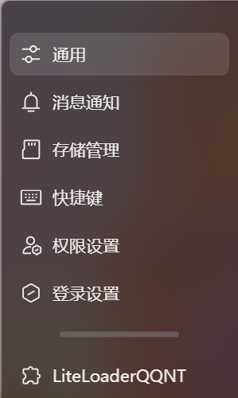
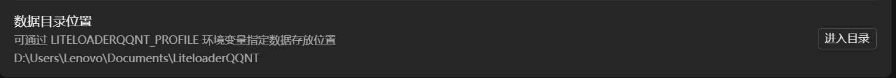
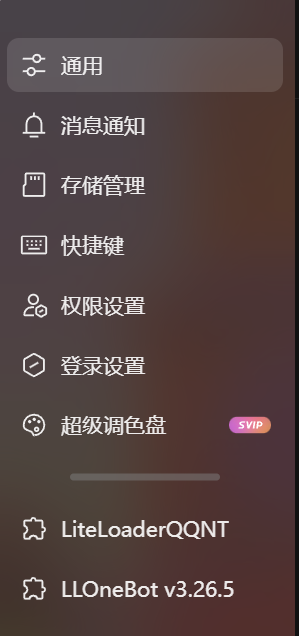
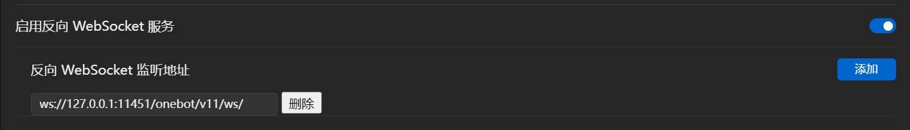

llonebot+nonebot2部署QQ机器人与部分插件(持续更新)
平台: windows 11
主要使用编程语言环境: python
主要使用框架: nonebot2+llonebot
前言
为什么我想搞一个qq机器人呢，其实是因为zju要招生了，给我们fj省的招生咨询群减小一点压力。
当然最后也没有减少很多压力，byd，看着有意思罢了，由于也没有内置ai，所以也没什么用处。
选择nonebot2+llonebot的原因主要是，是什么？其实是因为不会被ban，以及python的主语言对我这种小白来说比较友好。
文章是小白向的，毕竟搭建这个框架对于有一定基础的人来说可能看一下文档就快速解决了。所以本文还会包含python环境的配置。
python环境的配置
建议使用python 3.10/3.9，3.11出现了部分包不能成功解析的问题。
下载地址: https://www.python.org/downloads/
注意环境变量的配置，可以在python的下载exe中勾选配置环境变量，或者后续自行添加。
接下来我们下载pip，win+R输入cmd唤起终端，在终端中输入python -m pip install --upgrade pip setuptools wheel
如果此时报错:'python' 不是内部或外部命令，也不是可运行的程序或批处理文件。
那就是环境变量的问题，重新打开python安装程序，选择modify进行环境变量配置。
pip的安装也可以通过重新打开python安装程序的方法直装。
安装并使用nb-cli(nb脚手架)
建议先新建一个文件夹。
在文件夹中打开cmd，输入pip install nb-cli
如果此时发现下载速度比较慢的话，可能是没有换源导致的，我们进行换源。
临时性的: 输入语句格式修改为pip install <package> -i <address>，如我们下载nb-cli，输入这样的语句:pip install nb-cli -i https://pypi.tuna.tsinghua.edu.cn/simple
永久性的: 假设你的用户名称为admin,建立 admin主目录下的 pip子目录，在此pip子目录下新建pip的配置文件:pip.ini
c:\users\admin\pip\pip.ini
在其中输入:
[global]
index-url = https://pypi.tuna.tsinghua.edu.cn/simple
[install]
trusted-host = https://pypi.tuna.tsinghua.edu.cn
#tuna: https://pypi.tuna.tsinghua.edu.cn/simple
#aliyun: http://mirrors.aliyun.com/pypi/simple/
#douban: http://pypi.douban.com/simple/
nb-cli下载完成后，我们就可以使用nb命令了。
在该文件夹目录下打开终端，输入语句nb create。
这里会让你选择使用的模板，由于我们后续还将进行简单插件的开发，因此选择'simple(插件开发者)'。
项目名称依据你的喜好来命名，这里我填入'nonebot_first'。
适配器选择'Onebot V11'，驱动器选择'FastAPI'。
插件存储位置其实无所谓，随便选一个。
在后续两个选项中都选择y(yes)。
在加载完成后，环境就建造完好了。
在命令行中输入nb run(注意要在对应的文件夹目录下)，实现机器人的运行。
与qq的对接--llonebot
现在的机器人只能在本地运行，并不能实现我们真正想做到的QQ机器人功能，接下来我们将其与QQ进行对接。
默认对于QQ的下载不是件难事，所以我跳过了。
安装LiteLoaderQQNT
点击直接安装。
然后点击.exe文件安装，请注意在安装前关闭QQ进程。
安装完成后点开QQ的设置，看到LiteLoaderQQNT，即安装成功。

安装LLonebot
点击直接安装
将其解压到LiteLoaderQQNT的plugins目录下，具体位置可以在其QQ页面查找到。
 重启QQ后，在设置中看到LLOneBot，即安装成功。

配置反向websocket代理链接nb2
在QQ设置的LLonebot页面能够找到'启用反向WebSocket'，默认关闭，启用后在'反向WebSocket监听地址中填入':ws://<address>:<port>/onebot/v11/ws/其中,address默认为127.0.0.1,port默认为8080，也就是你默认填入ws://127.0.0.1:8080/onebot/v11/ws/。如果你需要修改地址与端口，请在nonebot目录文件夹下的.env文件中填入如下内容:
HOST=0.0.0.0
PORT=11451 # 是示例，想添什么都可以
然后你的地址就可以随便写，但是port要写成11451。

退出保存后，在nonebot目录文件夹下nb run，实现机器人的运行。
实现插件的部署
豪德，现在机器人建立好了，但是光秃秃的什么都没有，看的十分没意思，接下来我们把它安装一点插件，让它变得丰富多彩一点。
从外部安装插件
可以自行从nonebot插件商店中寻找合适的插件，并在文件夹目录下使用nb plugin install <plugin's name>的方式来安装。
通过 nb-cli 下载的插件本质上仍然是通过pip安装，因此插件文件一般会放置在用户全局或你创建的虚拟环境中的 site-packages目录中。你可以在pyproject.toml文件中设置需要加载的插件，以实现对插件的启用或禁用。
或者也可以用pip安装，这些都可以通过看对应插件github上的readme文件了解。
自主开发简单插件(可能会持续更新)
实现插件的方式都是在nonebot的插件对应文件夹(名称叫做你的机器人文件夹名称或者src，者取决于你安装时的选择)下创建一个文件夹，在其中创建一个'__init__.py'文件，填入对应内容。 也就是相当于你的主文件就是这个'__init__.py'文件，你当然可以命名其他的文件，不过加载都是从init加载的。
进群发送欢迎语文件
# __init__.py
from nonebot import on_notice
from nonebot.adapters.onebot.v11 import Bot, GroupIncreaseNoticeEvent
from nonebot.adapters.onebot.v11.event import NoticeEvent
# 使用 on_notice 装饰器来注册群通知事件监听器
group_increase = on_notice()
@group_increase.handle()
async def handle_group_increase(bot: Bot, event: NoticeEvent):
if isinstance(event, GroupIncreaseNoticeEvent):
group_id = event.group_id
user_id = event.user_id
# 尝试获取新成员的昵称
try:
member_info = await bot.get_group_member_info(group_id=group_id, user_id=user_id)
nickname = member_info.get("nickname", "新成员")
except Exception as e:
nickname = "新成员"
# 发送欢迎语
await bot.send_group_msg(group_id=group_id, message=f"<自行填入>")
检测到关键语句随机发送图片
# __init__.py
import os
import random
from nonebot import on_message, get_driver, permission as perm
from nonebot.adapters.onebot.v11 import Bot, Event, GroupMessageEvent
from nonebot.adapters.onebot.v11.permission import GROUP_ADMIN, GROUP_OWNER
from nonebot.plugin import on_keyword
from nonebot.adapters.onebot.v11.message import MessageSegment
driver = get_driver()
IMAGE_DIR = '<path>'
# 检查消息是否包含"美图"的关键字响应器
meitu_handler = on_keyword({'美图'}, priority=1, block=False)
@meitu_handler.handle()
async def handle_meitu(bot: Bot, event: Event):
# 确保事件是群聊消息事件
if isinstance(event, GroupMessageEvent):
# 获取图片目录中的图片文件列表
image_files = [f for f in os.listdir(IMAGE_DIR) if f.lower().endswith(('.jpg', '.png', '.jpeg', '.gif', '.bmp'))]
# 如果没有图片文件，则返回一条提示消息
if not image_files:
await meitu_handler.finish('没有找到图片文件。')
# 随机选择一张图片
random_image = random.choice(image_files)
# 构造图片消息的CQ码
image_path = os.path.join(IMAGE_DIR, random_image)
image_cqcode = f"[CQ:image,file={image_path}]"
# 发送图片消息
await meitu_handler.send(MessageSegment.image(image_path))
......
后续
其实把它放在自己的电脑上挺不方便的，毕竟你不'nb run'就不会运行，机器人也不会运行。
所以把它放在云服务器上就好了。
云服务器其实也就是一台电脑，你只要一直开着它就可以实现永久运行了！
什么？要钱？听、听不清楚
后续我可能会出如何配置，不过真的很简单，个人感觉没必要。
再后续--或者说期望吧
nonebot的插件市场其实还很不丰富，而mirai的插件市场虽然丰富而成熟，但是code=45的风控问题(也就是QQ觉得你的机器人要干坏事，不让你用账号链接机器人了。这其实可以通过换账号解决，但是一直改配置很烦)一直存在而无法破解，tx你真的是！ 所以也希望各路大佬多多大开脑洞,contribute一下我们的nonebot插件！